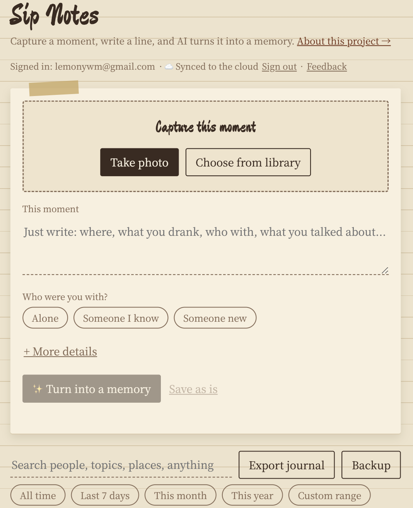
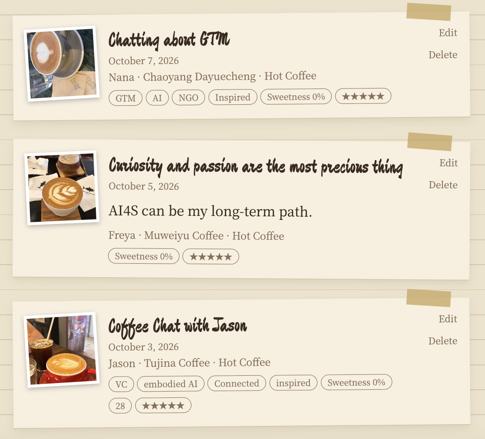
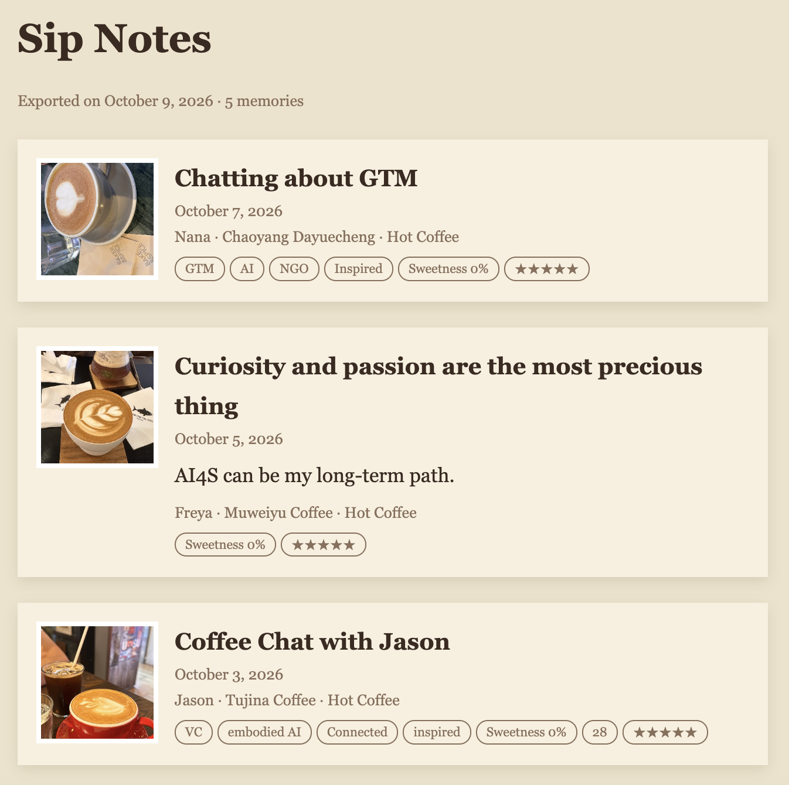

A personal memory layer for real life, built around coffee & tea. One photo and one sentence become a memory. AI organizes (title, short story, people, topics) instead of recognizing drinks, never invents details, and the user confirms every memory before saving. Serverless AI proxy, provider-swappable via env vars, local-first storage with optional cloud sync (Supabase, row-level security).
产品截图Screenshots



Sip Notes · 产品说明
一个围绕咖啡和茶的个人记忆层：记录探店喝到的那一杯，也记录和谁见面、聊了什么。由 Lemon设计并构建，用来展示我如何把 AI 用在一个具体的场景里：把随手写的一句话，整理成一条有故事的记忆。
问题
记录类产品很容易死在两点：每次录入太麻烦，记完又得不到回报。我自己常常探店、约 coffee chat，真正想留下的不是"一杯美式"，而是那一刻和那个人。
迭代故事：一次主动的砍功能
v1 识别饮品。最早的版本让 AI 从照片识别饮品种类，顺手填表。
调整方向。后来我意识到，靠一张照片识别饮品既不准，对用户也没多大价值；真正让人懒得记录的是"填表"。于是我把 AI 的角色从"识别"改成"整理"：把随手写的一句话变成标题、小故事、人物、话题和心情。
v3 照片优先。照片是主入口；饮品、温度、甜度、价格、地点、心情、评分全部可选并默认折叠；"和谁在一起"成为一等公民；AI 整理后先出"记忆预览"，用户确认并可编辑后才保存。目标是 30–60 秒完成一条。
上线与测试。部署到公开网址，用真实手机测试。测试中发现一个问题：即使用户已经填了人名，标题仍写成"和同行的人喝咖啡"。原因是提示词里的字段标签被模型当成了正文。我改了提示词，并加了一层代码保护，把残留的占位词替换成用户填写的名字，同时收紧了话题和感受只能来自用户文字。
先体验，再留存。不登录也能完成第一条记忆，保存之后才邀请用邮箱和密码注册；登录后，这台设备上已有的记忆会自动同步到云端，换手机也不会丢。目前用邮箱加密码，是因为免费方案下要自定义验证码邮件，需要自己的域名和邮件服务；有了之后会升级成验证码登录。
反馈入口。页面右下角有反馈窗口，用户可以选择功能建议、问题或产品建议，并附上图片，我直接在后台读取。
持续迭代。之后又加上了：编辑已保存的记忆、每条最多三张照片（可以单独添加、替换或删除）、按人和时间筛选、导出可读的日记。
AI 设计：宁可留空，不要编造
架构
- 密钥只在服务端，不进浏览器；函数带限流，防止被刷。
- OpenAI 兼容接口：换模型只改环境变量，可在国内模型与海外模型之间切换。
- 地点是带来源（手动 / EXIF / OCR / GPS）的对象，为之后接入地图预留。
- 账号与云端同步用 Supabase：每个用户只能读写自己的记忆（行级安全）。
刻意不做的
社交动态、关注、点赞、公开主页、推荐、咖啡店数据库、复杂 RAG。它是私人的，不是社区。
下一步
- 建一个约 30 条的小评测集，统计 AI 的“编造率”，改提示词或换模型时有数可比
- 某个人 / 某个话题的记忆时间线
- 邮箱验证码登录和找回密码（需要自己的域名和邮件服务）
- 语音记录
- 用户变多之后：照片改存对象存储，并加上监控
联系 / Contact：lemonywm@gmail.com
Sip Notes · Case study
A personal memory layer built around coffee & tea: the café drink you had, who you met, and what you talked about. Designed and built by Lemon to show how I apply AI to one concrete scenario: turning a casual one-line note into an organized memory.
The problem
Tracking apps usually die for two reasons: logging takes effort, and you get nothing back. I often visit cafés and have coffee chats. What I want to keep is not "an americano", it is that moment and that person.
Iteration story: cutting a feature on purpose
v1 Drink recognition. The first version had AI identify the drink from a photo and fill in the form.
The pivot. Recognizing a drink from a single photo turned out to be unreliable and low-value; the real burden is the form itself. So I changed AI's role from recognizing to organizing: turning one casual sentence into a title, short story, people, topics and mood.
v3 Photo-first. The photo is the entry point. Drink, temperature, sweetness, price, place, mood and rating are all optional and collapsed. "Who were you with" is a first-class field. After organizing, the user sees an editable memory preview and confirms before saving. The goal is under 30–60 seconds per memory.
Ship and test. I deployed to a public URL and tested on a real phone. I found a bug: even after the user typed a name, the title read "coffee with my companion", because the model treated a field label in my prompt as content. I rewrote the prompt, added a code guard that replaces leftover placeholder words with the user's name, and tightened topics and feelings so they only come from the user's own text.
Experience first, keep later. The first memory works without an account; only after saving do I invite the user to sign up with email and password. After signing in, memories already on the device sync to the cloud automatically, so nothing is lost when they change phones. I use email and password for now because customizing code emails on the free plan needs my own domain and mail service; once I have those I will upgrade to email-code login.
Feedback loop. A feedback window sits at the bottom right: users pick feature request, bug or product advice and can attach an image, and I read it in the back office.
Iterating. I then added editing of saved memories, up to three photos per memory (added, replaced or removed individually), filtering by person and time, and a readable journal export.
AI design: leave it blank rather than make it up
Architecture
- The API key lives server-side only, and the function is rate-limited to prevent abuse.
- OpenAI-compatible interface: swap models by changing environment variables, between Chinese and overseas providers.
- Place is an object with a source (manual / EXIF / OCR / GPS), ready for maps later.
- Accounts and cloud sync run on Supabase: each user can only read and write their own memories (row-level security).
Deliberately not built
Social feed, followers, likes, public profiles, recommendations, a café database, complex RAG. It is private, not a community.
Next
- A small evaluation set of about 30 notes to measure how often the AI invents details, so prompt and model changes can be compared with numbers
- Timeline per person / topic
- Email-code login and password reset (needs my own domain and mail service)
- Voice notes
- At larger scale: move photos to object storage and add monitoring
Contact: lemonywm@gmail.com